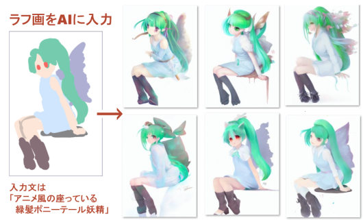
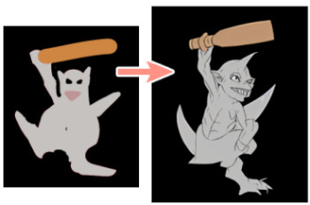
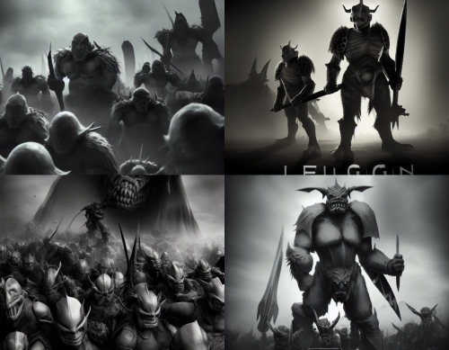
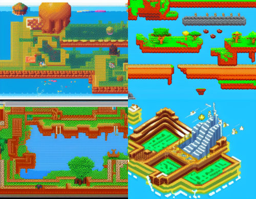
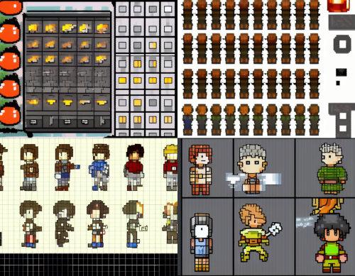

■2022-09-17 (土) 画像生成AIをゲーム開発に活かしたい！▼
今回の開発日誌は最近流行している「画像生成AI」について！
私も【Mid Journey】という画像生成AIのお安いサブスクコースに入ってみたり、
開発しながら【Stable Diffusion】という画像生成AIを回しまくっていました。
(2025-08-14追記: ただし現時点ではこれらの画像生成AIは
学習元画像が無許諾のものが使われているとのことで、
権利面で問題があることが指摘されています。
ちなみに性能も上がりすぎて、今は今回お話をしているほぼすべての分野で
機能的な問題は解消されつつあります。権利面は解決してません！）
で、その中で私の仕事における実用面もはかっていたので、今回は
「ゲーム開発」の各素材作りにおいて
画像生成AIがどのくらい使えそうだったか
という所見をおおざっぱにまとめておきたいと思います！
ただし私は画像生成AIで各素材を作る上でのガチ勢ではないので、
「初心者がちょっと触れたときにどう思うか」
くらいの内容だと思ってください。
私が無理だと言っても、プロなら実現できるかもしれません。
なお、今回の件とは別に、妖精イーリスのファンアートをAI画像生成を使って
1枚作るまでの動画をアップしましたのでよければそちらもご覧ください。
実写からだんだん理想に近付いていくイーリス絵にご注目！
【Stable Diffusion】AI画像生成を使って妖精イーリスのファンアートを作る！【片道勇者】
【総合】
最初に、ゲーム開発に使うにあたって
「現時点の」画像生成AI全般に言えそうなことを列挙します。
◆画像生成AIはキーワード（プロンプト）を入力して作りたいものを指示する
→ このキーワードの指示方法が画像生成AIのうまさの70～80％を占めると思います。
（あとの20～30％は後述する画像入力）
◎何でもいいので「とにかくそれっぽいもの」が欲しいときはとても有用
→ 当然ながら、こだわりがなければないほどAIが出したものにOKを出しやすいです。
→ 「すでに頭の中にあるイメージ」に合わせる場合はその分だけ苦労が発生します。
◎「画風や雰囲気」を統一させないつもりなら、なお使いやすい
→ ただ、全ての画像の画風が違うところまで行くと、もうネタゲーになると思います。
▲同じ人物・物体を「同じデザイン・画風のまま別の形で出す」のは非常に困難。
▲つまり「アニメーションするキャラチップや表情差分」を作ることは難しい。
→ 1枚1枚がほぼ一期一会なので、「差分」や「アニメーション」が欲しい場合、期待通りの
パターンをAIで作るのは非常に低確率になるか、非常にうまい指示が必要です。
→ 「無地のTシャツ」しか着てないキャラなどは再現しやすいです。
→ 自力で描き加えて表情差分などを作る前提ならだいぶ生成画像の許容度が上がります。
●出力画像に対してトレースや加筆・修正しても怒られない
→ お絵かき能力がある人には単純に「品質の高いラフ画」「下書き」として使えます。
◆「AIへの『入力画像』としてラフ画を入れる」方法で、作りたいものの
「構図」や「ポーズ」「カラー」をある程度指示できる。
→ AIへの入力として「画像」が指定できる機能（Stable Diffusionなら「img2img」機能）が
あるならば、「キーワード」に加えて「ラフ画」などを入力として指定することで
出力画像の方向性を指示できます。
この記事内ではこの形で画像入力機能を使うことを以後、「ラフ画入力」と呼ぶことにします。
↓
【見本】ものすごいザツなラフから、座っている緑ポニーテール妖精をAIに作ってもらったケース

画像生成時の設定にもよりますが、元絵の方向性にかなり近いものが出せます。
ポーズや色を指示したい場合に特に有用！
【AI画像生成による、各素材作りの有用度】
ここからは、「キャラクター顔画像」「モンスター画像」「背景画像」
「雰囲気画像」「キャラを含む1枚絵」「ドット絵」に対して、
それぞれ主観でAI画像生成の有用度を述べていきます。
出力している画像は全て「Stable Diffusion」で作ったものです。
他のAIだと同じキーワードでももっと高品質で出せることもあるので、
AIごとの得意分野を見極める必要もありそうです。
【キャラクター顔画像】
有用度 ★★★☆☆ 要工夫、修正力があれば有利
◎画風を統一させるつもりがないネタゲーなら無思考に使える
▲希望するデザインで作るのはちょっと大変
▲他に作った顔と画風を一致させる場合は、入力文の工夫や試行回数が必要か
×人間の手はなかなかうまく描けない（技術の進歩で解消される可能性大）
×「服装差分」「表情差分」が欲しい場合、画像生成AIで作るのは地獄
◆「ラフ画入力」するとポーズや顔、カラーを期待通りに出しやすい
＜顔絵を以下の入力で4回出力してみたケース＞
金髪の女性騎士、顔のアップ、かわいいアニメ風、銀の鎧、pixiv風
blond haired lady knight , face angle, cute anime style , silver armor, pixiv style

顔絵は「1キャラ1枚だけしか立ち絵がない」「こだわりが少ない」条件ならば、
AIで生成した画像だけでもけっこう使えそうな印象です。
ただ、おそらく「画風を一致させる」のに結構な運や指示技術や試行回数がいるので、
「色んなキャラの顔画像を作る場合」は、出てきた画像を修正できる技術がないと
雰囲気を統一させるのに苦労するかもしれません。
また、生成キーワードに「表情（例：笑顔[smile]）」を足しただけで
「髪型」や「服装」まで変わったりするので
表情差分をAIだけで作るのは試行回数的に地獄を見そうです。
一部のAIに搭載されているインペインティング（部分描き直し）機能などを
駆使すればうまく行くのかもしれませんが、それは試していません。
お絵かきできる人なら、「顔を自分で描き直す」などで
自分の画風っぽくしたり、新たに表情差分を作ったりできるため、
素材の統一感を出しやすくバリエーションも増やしやすいと思います。
結局、お絵かきできる人の方がAI使用前提でも作れるものの自由度が高い！
また、「AIは『人間の手』がうまく描けない」ことが多いので、
もし「手」が含まれる立ち絵なら、手も自身で描いてあげられると強そうです。
といっても、イラスト描く人にとっても一番難しい気がするんですけどね、手！
＜表情差分はいける？＞
なお「表情差分」に関してだけは、1枚の顔イラストを変形させて
表情を変えた差分を作れるAIも生まれているので、
そういうのを利用することで作れるかもしれません。
実際に試してないので名前は挙げませんが、
「イラスト 表情を変える AI」などで検索すると色々出てきます。
【アイテム画像・モンスター画像】
有用度 ★★★★☆ AIだけでも割といける
●キャラ画像とほぼ同条件。画風統一させるキーワードを作れれば量産できそう
▲モンスターの場合、キーワードだけだと思ったより全身が出せないこともある
◆アイテムでもモンスターでも、「ラフ画像入力」を活かして作れば
期待する形状・ポーズ・色で出しやすくなる
▲（ドットでない）「アイコン画像」などもこれと同様だが、小さいアイコンだと
複数画像のサイズ合わせが難しい可能性がある
＜赤いポーションの絵を以下の入力で4回出力してみたケース＞
赤いポーション、アイテム画像、ファンタジー、ゲーム素材、高精細
red potion , item graphic, fantasy , game asset , highly detailed

＜モンスター絵を以下の入力で4回出力してみたケース＞
JRPG、ビデオゲーム、棍棒を持った小さい灰色ゴブリン、正面(?)、ゲーム素材、ファンタジー、全身図、遠目に
JRPG, video game, a small gray goblin with a club, face up, game assets, fantasy, full body portrait, long shot

アイテム画像やモンスター画像もキャラ画像とほぼ同じ条件です。
やはり「画風を統一」することが問題になってくると思いますが、
キャラの顔よりは画風統一の制約が少しゆるそうなので、まだラクな気がします。
ただモンスターの場合、AIにもよるのかもしれませんが、
「遠目に出して」「全身図」とか指定しても、
キーワードだけで生成すると意外に全身が画像内におさまらない印象があります。
その場合も、「ラフ画像入力」を使えば画像内にもおさめやすくなる感触でした。
ポーズや色も指定しやすいのでいい感じです。
↓
実例、左が入力に使ったラフ画像、右がAIから出てきた画像の1つ。
ポーズは期待と違ったが色や形状や棍棒の位置などは似せてくれている。

これは塗りがシンプルな出力画像ですが、キーワードを調整すれば
ある程度は任意の画風に変えられます。
【背景画像】
有用度 ★★★★★ AIだけでもほぼ完璧
●「なんとなくファンタジー風のXX」みたいなおおざっぱな要望にほぼ応えられる
●シード（乱数の種）を一致させれば時間差分も作れることもある
●画風のワードが決まれば、あとは背景を指示するだけで欲しい背景を作りやすい
▲独特な世界設定を細かく表現するのは大変だが、下地は作れる。
＜背景絵を以下の入力で4回出力してみたケース＞
美しい白い城、高精細、かわいいアニメ風、品の良い（空気感？）、ダイナミックライト、ファンタジー
beautiful white castle. Highly detailed, cute anime style, Atmospheric, Highly detailed, dinamic light, fantasy

なんとなくですが、おそらく多くの画像生成AIで、
「おおよそ欲しい背景画像」が高品質で出せそうな気がしています。
良質な背景画像素材は貴重なので、ゲーム開発において非常に助かります。
また、指示内容の調整である程度のチューンも可能！
多くのAIは、画風を指定するワードさえうまく決まれば、
数枚ほど出した時点でかなりいい背景画像を出してくれると思います。
「とりあえずなんでもいいからファンタジーっぽい街の背景が欲しい！」
といった要望なら問題なくいけるはず！
乱数のシード（種）を合わせて時間帯を指すキーワードを追加すれば、
運次第で朝・昼・夜バージョンなどの背景差分を作れることもあります。
（ただし時間帯指定の効果が薄かったり、時間帯指定をしただけで
背景が微妙に変わってしまうこともあるので工夫は必要かも）
一方で、
「独特な世界設定が頭の中にガチガチにあってそれに合わせて調整する」
という必要がある場合、その独特さの分だけおそらく大変になります。
というのも、入力文に細かいパーツ指示を入れても、
それが学習データにない場合、反映されなかったり、変な出方をすることが多いので、
独特の世界観の背景を作るのはちょっと大変かもしれません。
ある程度のお絵かき技能があって絵の修正ができる人なら
そういう面での調整もしやすいと思います。
ただそもそも、「何でもいいから酒場の背景が欲しいのに手元にないよー！」
という状況になる場面の方が多いと思うので、その点がカバーできるだけでも
十分以上に役に立つはずです。
【（キャラが登場しない）雰囲気イラスト】
★★★★☆ AIだけでも結構いける
●通常時と画風が違っていてもいいイメージイラストは作りやすい。
（古代の壁画みたいに描く、そのシーンだけ絵画風にする、など）
●「1回しか出てこない存在」「1回しかその画風で描かれない存在」の絵は出しやすい
◆デザインや画風の統一が必要になると前述「キャラ顔画像」と同じくらいの難易度になる
＜雰囲気イラストを以下の入力で4回出力してみたケース＞
数千人ものゴブリン軍団、叙事詩、映画風、映画ポスター風、ダイナミックライト、灰色トーン
Thousands of Goblin Legions, epic, cinematic, movie poster like , dinamic light, gray tone

特定のゲーム内キャラが登場しない雰囲気イラスト、
たとえば上のように「（硬派そうな絵柄の）モンスター軍団が攻めてきた風景」
みたいなのを作るだけなら割と容易です！
とりあえずキーワードに「映画風」とか入れて作ると硬派そうな絵ができます。
コンセプトアート作りや世界設定解説シーンなどに使えるかも？
上の画像は「ゴブリン軍団」という指定で作りましたが、
さっき出した単体のゴブリンとは全然雰囲気が違うので、
ゲーム内で一緒に使うとツッコミを受けるかもしれません。
【キャラが登場する1枚絵】
★☆☆☆☆ 要工夫+絵スキル
×特定のデザインでキャラを出すのが非常に困難なので、まずそこでつまずくかも
▲複数人が同時に期待通り登場する絵を作るのはもっと難しい
→ 1人ずつ個別に作って合成する、などの手順が必要になるかも
＜1枚絵を以下の入力で4回出力してみたケース＞
金髪の女騎士が小さな緑髪妖精を指さす・かわいいアニメ風
The blond haired lady knight points her finger at the green-haired small fairy. cute anime style

特定のキャラクターが映っている場面を
期待通りのポーズで作るのはかなり難しい印象です。
上のように「小さい緑髪妖精が女騎士に指をさされているシーン」
と指示したつもりでも、全然期待通りに作ってくれません。
「さっきの顔画像で作った金髪騎士はどこへ！？」となってしまいます。
なので「ラフ画入力」を駆使して、1体ずつ作りたいポーズの絵をAIで作って
最後に1枚に合成するのが基本戦略になりそうなのですが、それをやっても
「AIで出したキャラの服装などのデザインが元となかなか一致させられない」
という課題が出てきます。やっぱり、どの画像も一期一会になりますからね。
正直、AIでの1枚絵作りに関しては、ライトに使う場合は
「構図を参考にする」くらいの期待度で見た方がいいのかもしれません。
絵を修正する能力がないと、AIを回し続けるだけで
ものすごい時間を使ってしまいそうな気がします。
なお、「キャラ立ち絵」とほぼ同じ理由で、
お絵かきできる人なら各所を望むように書き換えることはできますが、
1枚絵なら「手」を修正する技術がさらに高確率で必要になるかもしれません。
早くイラストの手も上手に出力して欲しい！
【ドット絵】
有用度 ★☆☆☆☆ 限定的/困難
●RPG風の「マップ絵」を出すならかろうじてアリかもしれない
（直接マップチップとして出すのは難しいか役に立ちにくい印象）
×アニメーション差分や、方向差分が必要な「キャラチップ」を作るのは非常に困難
×ドット絵として出てきても複数枚でのサイズ・雰囲気を統一させるのが困難な場合が多い
基本的に、「統一されたフォーマットのもの」が大量に必要なドット絵は、
現段階のAIで作るにはちょっと向いていない印象です。
まず、以下はマップ絵を作ってみたケースです。
＜マップ絵を以下入力で4回出力してみたケース＞
ドット絵、見下ろし型ビデオゲーム、大地と海と山とファンタジー建物、16ビット
pixel art, top down video game, ground ,sea , mountains and fantasy building, 16 bit,

ドット絵を作るにあたってまだいくらかうまく行きそうなケースとして、
上記のような「ドット絵で描かれたマップ」を作ってもらう場合は、
1枚のアートとしていいのが出てくることがあります。
「マップタイルを直接出すよりは1枚の完成済みマップとして
出したのを分解してタイル化する方がラクそう……？」
と個人的にぼんやり思っていますが、うまくできる人なら違う意見になるのかもしれません。
さらにこれを「同じフォーマット・雰囲気で大量に作れるか」となると、
また難しい問題になってくるでしょう。
＜キャラクターチップを以下入力で4回出力してみたケース＞
スプライトシート、キャラクターチップ、ゲーム素材、4方向キャラ、16ビット風、JRPG
sprite sheet, character chip, game assets, 4 directions character, 16 bit , JRPG

そしてやや絶望的に感じているのが
「アニメーション差分」「方向差分」などが必要なキャラチップ！
これをAIに作ってもらうのはよほどの忍耐と工夫と豪運が必要に思われます。
4方向キャラクターチップを作ってもらおうとした上の画像を見ても分かるように、
●似たようなのが並んでるけどうまくアニメーションしてない！＆方向違いじゃない！
●向きが違うのはなんとか出せたけどデザインも変わってる！
●別々の出力画像として出したけどサイズが全然違う！
ということが頻発するので、AIでのキャラチップ作りは
ほぼ期待しないほうがいいかもしれません。
私の工夫が足りないだけで、すごいAIプロンプター（入力文作成者）や
ラフ画入力マスターなら出せるのかもしれませんが、
とにかく何らかの大きな工夫が必要になりそうです。
という感触でした。
他にも色々素材の種類はありますがひとまずこれだけで！
【まとめ】
今のところ、画像生成AIをゲーム開発に使う際は
●「背景画像」作りに使うことが一番多くなりそう
●「アイテム画像」や「モンスター画像」もAI単体でもかなり使えるかも
●固定デザインで出力しづらい「キャラ絵」はうまい使い方を見つけられれば使えそう？
●「コンセプトアート（雰囲気画像）」はAIに下絵を作ってもらうと楽そう！
●「キャラ1枚絵」には、AIにポーズ見本を作ってもらう程度なら使えそう。
●「ドット絵」の量産はたぶん困難そう、AIで作った1マップだけ使う形ならいける……？
という感触でした。あくまで初心者AIユーザ目線で！
私の場合は、AIがそれっぽいところまで作ってくれたら
あとは自力で書き換えて理想通りに作るつもりなので、
一定以上に絵が描ける人ならば「サポート」の形で便利に使える場面も多そうです。
特に私の場合、「落書き以下のラフ画から自然なポーズを
何かしら描いてくれる」だけでも非常に役に立ちます。
私程度のお絵かきスキルだと、それらしい「ポーズ」の下地を
バランス良く描くだけでも何十分もかかる上に、それをしても
結局使えるものにならないことさえ多々ありますからね！
その工程だけでも参考資料にできたりするのは非常に大きいです。
ゲーム開発は幸いにして、「人間が作らなきゃダメ！」といった
製造過程での評価があんまりない業界なので、
もし一般的にも使われる雰囲気がでてきそうなら、
うまいこと画像生成AIを活用していきたいと思います。
そして得られた時間で、ゲームをより面白くしていくことに時間を投入したいですね！
（2025年追記：この時点では画像生成AIの性能が低いのもあって
まだあまり大きな問題になっていませんでしたが、
2023年以降、画像生成AIの多くは無断で収集したイラストなどから
学習されているケースが問題視され、
創作物への使用は避けた方がよい状況となっています）
なお、私が使ったことがある画像生成AI、『Mid Journey』と『Stable Diffusion』のサイトはこちらです。
『Stable Diffusion』の方はブラウザから試せるのでお手軽です。
【Mid Journey】 要Discordアカウント
https://www.midjourney.com/
専用のDiscordサーバに入って、コマンドを入力して生成します。
ただしお試しは公開の場となります。
【Stable Diffusion】 要メールアドレスかGoogle、Discordアカウント
https://beta.dreamstudio.ai/
DreamStudioと言うページに飛びますが使用AIはStable Diffusionです。
アカウントを作りさえすればブラウザの専用ページ上でデフォルトサイズの画像を
200回くらいお試し画像作成できます。上よりお手軽。
また、Stable Diffusionはプログラムも無料公開されており、
特定のGPU（グラフィック処理チップ）が入ってれば自分のパソコン上でも動かせますし、
なくてもGoogleの『Colaboratory』という、
ブラウザからプログラムを実行できるサービスに入れて使うこともできます。
【おまけ AI画像生成への入力フリー素材】
上の方で出た動画の中でもお話をしましたが、
以下の妖精イーリスの立ち絵だけ
「このキャラの無償のファンアートを作る目的に限り」
「画像生成AIへの入力」として自由にお使いいただけます！
【透過PNG】 右クリックや長押しメニューなどから保存できます

ファンアートと呼べるかもはや怪しい
「イーリスをAIで再現しようとしてみた（再現率20％）」
みたいなものをAIで作って公開しても全然構いませんので、
無償用途である限りはご自由にお使いください。上半身だけ使うなどでもOK！
上記画像を利用した作成画像のそばに「妖精イーリス」という単語さえ入ってれば、
どのような内容であれファンアートに含む＝AI利用OK、とします。
（当然ながら、公序良俗に反するとか、誰かを傷つける内容に使うのはダメですよ！）
2022-09-17 (土)  カテゴリ: 開発日誌
カテゴリ: 開発日誌
 カテゴリ: 開発日誌
カテゴリ: 開発日誌